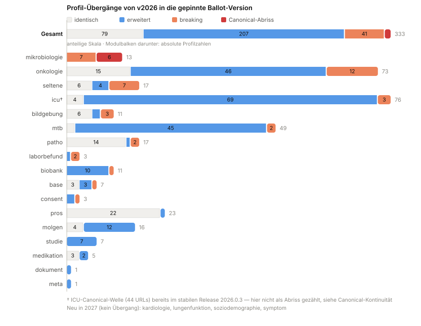

MII Kerndatensatz Complete
2027.0.0-ballot.19 -

MII Kerndatensatz Complete
2027.0.0-ballot.19 -

MII Kerndatensatz Complete - Local Development build (v2027.0.0-ballot.19) built by the FHIR (HL7® FHIR® Standard) Build Tools. See the Directory of published versions
Leitfaden für Standorte und Projekte, die von der 2026er KDS-Linie auf die 2027er Ballot-Linie dieser BOM wechseln. Die zugrunde liegenden Zahlen und der Profil-für-Profil-Vergleich stehen auf der Seite Versionierung; hier steht, was zu tun ist.

Generiert mit scripts/migration-viz.py. Grau = kein
Handlungsbedarf, Blau = nur Erweiterungen, Orange = breaking, Rot =
Canonical-Abriss. Sortiert nach Handlungsbedarf.
Eine Abhängigkeit statt 21: die BOM pinnt alle Module und die externen Pakete in geprüft kompatiblen Versionen (siehe Installation). Beim Wechsel von einzeln deklarierten 2026er-Modulen die Einzeldeklarationen entfernen — sonst entstehen doppelte Canonicals beim Auflösen.
Die 2027er Linie ist untereinander kohärent: Base und Meta werden nur noch in je einer Version gezogen, die Validierungsprobleme durch doppelte Canonicals der frühen Ballot-Phase entfallen.
Einige Module haben Profil-URLs umbenannt — Instanzen mit meta.profile auf
die alten Canonicals validieren dann gegen nichts mehr:
2026.0.2 → 2026.0.3. Wer von 2026.0.2 oder älter
kommt, muss die Canonicals unabhängig vom Ballot migrieren; 2027.0.0-ballot.3
führt die neuen URLs unverändert weiter.Die kuratierte Zuordnung alt → neu entsteht in der
Rename-Kandidatenliste
(Ähnlichkeits-Matching über Element-Fingerprints; Spalte confirmed zeigt den
Kuratierungsstand). Für ETL-Strecken heißt das: meta.profile-Werte per
Mapping-Tabelle ersetzen, Profil-basierte Routing-/Validierungsregeln anpassen.
Auch ValueSet-Canonicals sind betroffen (relevant für eigene Profile mit Bindings auf MII-ValueSets, Questionnaires, Terminologieserver-Konfigurationen und CQL):
onko--Namenspräfix bei
identischem Inhalt (mii-vs-strahlentherapie-* → mii-vs-onko-strahlentherapie-*).| Modul | alte Canonical | neue Canonical | Inhalt |
|---|---|---|---|
| mikrobiologie | …/modul-mikrobio/ValueSet/mii-vs-empfindlichkeit-einheiten-ucum | …/modul-mikrobio/ValueSet/mii-vs-mikrobio-empfindlichkeit-einheiten-ucum | ähnlich (0.667) |
| mikrobiologie | …/modul-mikrobio/ValueSet/mii-vs-keimzahl-einheiten-ucum | …/modul-mikrobio/ValueSet/mii-vs-mikrobio-keimzahl-einheiten-ucum | ähnlich (0.5) |
| mikrobiologie | …/modul-mikrobio/ValueSet/mii-vs-mikrobio-antigen-assay-einheiten-ucum | …/modul-mikrobio/ValueSet/mii-vs-mikrobio-antigen-antikoerper-quantitativ-einheiten-ucum | ähnlich (0.286) |
| mikrobiologie | …/modul-mikrobio/ValueSet/mii-vs-mikrobio-aviditaet-snomedct | entfällt ersatzlos bzw. kein Kandidat | ähnlich (0.0) |
| mikrobiologie | …/modul-mikrobio/ValueSet/mii-vs-mikrobio-barlett-score-loinc | …/modul-mikrobio/ValueSet/mii-vs-mikrobio-bartlett-score-loinc | identisch |
| mikrobiologie | …/modul-mikrobio/ValueSet/mii-vs-mikrobio-clsi-hl7 | …/modul-mikrobio/ValueSet/mii-vs-mikrobio-susceptibility | ähnlich (0.833) |
| mikrobiologie | …/modul-mikrobio/ValueSet/mii-vs-mikrobio-eucast-snomedct | entfällt ersatzlos bzw. kein Kandidat | ähnlich (0.125) |
| mikrobiologie | …/modul-mikrobio/ValueSet/mii-vs-mikrobio-kultur-methode-snomedct | entfällt ersatzlos bzw. kein Kandidat | ähnlich (0.0) |
| mikrobiologie | …/modul-mikrobio/ValueSet/mii-vs-mikrobio-mikroskopiemethoden-snomedct | entfällt ersatzlos bzw. kein Kandidat | ähnlich (0.111) |
| mikrobiologie | …/modul-mikrobio/ValueSet/mii-vs-mikrobio-morphologie-snomedct | …/modul-mikrobio/ValueSet/mii-vs-mikrobio-morphologie-ergebnis-snomed | ähnlich (0.276) |
| mikrobiologie | …/modul-mikrobio/ValueSet/mii-vs-mikrobio-mre-klasse-snomedct | entfällt ersatzlos bzw. kein Kandidat | ähnlich (0.0) |
| mikrobiologie | …/modul-mikrobio/ValueSet/mii-vs-mikrobio-positiv-negativ-snomedct | …/modul-mikrobio/ValueSet/mii-vs-mikrobio-resistenzkategorie-status-ergebnis | ähnlich (0.5) |
| mikrobiologie | …/modul-mikrobio/ValueSet/mii-vs-mikrobio-qualitative-labor-ergebnisse-snomedct | …/modul-mikrobio/ValueSet/mii-vs-mikrobio-detected-not-detected-snomed | ähnlich (0.667) |
| mikrobiologie | …/modul-mikrobio/ValueSet/mii-vs-mikrobio-resistenzgene-loinc | entfällt ersatzlos bzw. kein Kandidat | ähnlich (0.0) |
| mikrobiologie | …/modul-mikrobio/ValueSet/mii-vs-mikrobio-resistenzmutation-loinc | entfällt ersatzlos bzw. kein Kandidat | ähnlich (0.0) |
| mikrobiologie | …/modul-mikrobio/ValueSet/mii-vs-mikrobio-serologie-immunologie-loinc | entfällt ersatzlos bzw. kein Kandidat | ähnlich (0.0) |
| mikrobiologie | …/modul-mikrobio/ValueSet/mii-vs-mikrobio-serologischer-test-einheiten-ucum | …/modul-mikrobio/ValueSet/mii-vs-mikrobio-empfindlichkeit-einheiten-ucum | ähnlich (0.273) |
| mikrobiologie | …/modul-mikrobio/ValueSet/mii-vs-mikrobio-voraussichtliche-empfindlichkeit-snomedct | entfällt ersatzlos bzw. kein Kandidat | ähnlich (0.0) |
| mikrobiologie | …/modul-mikrobio/ValueSet/mii-vs-molekulare-diagnostik-einheiten-ucum | …/modul-mikrobio/ValueSet/mii-vs-mikrobio-molekulare-diagnostik-einheiten-ucum | ähnlich (0.714) |
| mikrobiologie | …/modul-mikrobiologie/ValueSet/mii-vs-mikrobio-kulturtests-loinc | entfällt ersatzlos bzw. kein Kandidat | ähnlich (0.0) |
| mikrobiologie | …/modul-mikrobiologie/ValueSet/mii-vs-mikrobio-mikroskopie-tests-loinc | entfällt ersatzlos bzw. kein Kandidat | ähnlich (0.009) |
| mikrobiologie | …/modul-mikrobiologie/ValueSet/mii-vs-mikrobio-molekulare-diagnostik-loinc | entfällt ersatzlos bzw. kein Kandidat | ähnlich (0.0) |
| onkologie | …/ext/modul-onko/ValueSet/mii-vs-strahlentherapie-ende-grund | …/ext/modul-onko/ValueSet/mii-vs-onko-strahlentherapie-ende-grund | identisch |
| onkologie | …/ext/modul-onko/ValueSet/mii-vs-strahlentherapie-stellungzurop | …/ext/modul-onko/ValueSet/mii-vs-onko-strahlentherapie-stellungzurop | identisch |
| onkologie | …/ext/modul-onko/ValueSet/mii-vs-strahlentherapie-strahlenart | …/ext/modul-onko/ValueSet/mii-vs-onko-strahlentherapie-strahlenart | identisch |
| onkologie | …/ext/modul-onko/ValueSet/mii-vs-strahlentherapie-strahlungseinheit | …/ext/modul-onko/ValueSet/mii-vs-onko-strahlentherapie-strahlungseinheit | identisch |
| onkologie | …/ext/modul-onko/ValueSet/mii-vs-strahlentherapie-zielgebiet | …/ext/modul-onko/ValueSet/mii-vs-onko-strahlentherapie-zielgebiet | identisch |
| onkologie | …/ext/modul-onko/ValueSet/mii-vs-systemische-therapie-ende-grund | …/ext/modul-onko/ValueSet/mii-vs-onko-systemische-therapie-ende-grund | identisch |
| onkologie | …/ext/modul-onko/ValueSet/mii-vs-systemische-therapie-stellungzurop | …/ext/modul-onko/ValueSet/mii-vs-onko-systemische-therapie-stellungzurop | identisch |
| seltene | …/ext/modul-seltene/ValueSet/von-seltene-betroffen-vs | …/ext/modul-seltene/ValueSet/mii-vs-seltene-von-se-betroffen | identisch |
Details in der VS-Rename-Kandidatenliste (Composition-Vergleich; inhaltliche VS-Änderungen bei gleichbleibender URL sind hier ausdrücklich nicht erfasst — siehe Versionierung → Abgrenzung).
Sonderfall ICU ↔ ISiK 6 (Governance-Übergang): Ein großer Teil der
ICU-Profillandschaft wird in ISiK 6 unter gematik-Canonical weitergeführt —
das ISiK-6-Package bettet 83 MII-benannte Profile physisch ein
(https://gematik.de/fhir/isik/StructureDefinition/mii-pr-icu-…). Die Aufteilung:
ballot.3 und ISiK 6),ballot.3),SD_MII_ICU_Koerpergroesse_Percentil_Altersabhaengig,
SD_MII_ICU_Koerperkerntemperatur_Stirn, SD_MII_ICU_Koerpertemperatur_Oral,
SD_MII_ICU_Sonstige_Pulsatile_Druecke_Generisch
(dazu bettet ISiK 6 das Basismodul-Profil MII_PR_Prozedur_Procedure ein).Wichtig: Die Zuordnung betrifft nur die URLs — sie ist keine Konformitätsaussage. Nur 4 der übernommenen Profile sind strukturell identisch mit ihrem letzten MII-Stand; die ISiK-Fassungen sind überwiegend ausspezifiziert (Struktur-Ähnlichkeit je Profil in der Governance-Tabelle). Eine Instanz, die gegen das MII-Profil valide ist, ist es gegen das ISiK-Pendant nicht automatisch.
Maschinell nutzbar sind alle drei Mappings als ConceptMaps im URI-System
urn:ietf:rfc:3986 — damit beantwortet $translate (z.B. auf dem
Validation-Server) zur Laufzeit, wohin eine alte Canonical zeigt:
Profil-Canonicals ·
ValueSet-Canonicals ·
ICU → ISiK 6.
Beide sind als draft/experimental markiert, solange die Kuratierung läuft
(equivalent = inhaltsgleich belegt, relatedto = Kandidat mit Score,
unmatched = entfällt ersatzlos).
41 Profil-Übergänge sind strukturell breaking (Elemente entfernt oder
inkompatibel geändert) — Schwerpunkte Onkologie (12), Mikrobiologie (7),
Seltene Erkrankungen (7), Bildgebung (3), ICU (3). Welche Elemente konkret,
zeigt der Version-History-Explorer
je Profil (bzw. profile-pairwise-changes.csv im selben Repo, Spalten
elements_removed/elements_added).
Die Mehrheit der Übergänge ist unkritisch: 79 Profile identisch, 200 nur erweitert — bestehende Instanzen bleiben dort gültig.
| Profil | Übergang | entfernte Elemente |
|---|---|---|
| MII_PR_Diagnose_Condition | 2026.0.1 → 2027.0.0-ballot | Condition.onset[x]:onsetPeriod, Condition.onset[x]:onsetPeriod.end, Condition.onset[x]:onsetPeriod.end.extension, Condition.onset[x]:onsetPeriod.end.extension:lebensphase-bis, Condition.onset[x]:onsetPeriod.end.extension:lebensphase-bis.url, Condition.onset[x]:onsetPeriod.end.extension:lebensphase-bis.value[x], Condition.onset[x]:onsetPeriod.end.extension:lebensphase-bis.value[x].coding, Condition.onset[x]:onsetPeriod.end.extension:lebensphase-bis.value[x].coding.code … +9 weitere |
| Profil | Übergang | entfernte Elemente |
|---|---|---|
| MII_PR_Bildgebung_Bildgebungsprozedur | 2026.0.0 → 2027.0.0-ballot.1 | Procedure.category.coding:sct.display |
| MII_PR_Bildgebung_Radiologische_Befundungsprozedur | 2026.0.0 → 2027.0.0-ballot.1 | Procedure.category.coding:sct.display, Procedure.code.coding:sct.display |
| MII_PR_Bildgebung_Radiologischer_Befund | 2026.0.0 → 2027.0.0-ballot.1 | DiagnosticReport.category.coding:diagnostic-service-sections.code, DiagnosticReport.category.coding:diagnostic-service-sections.display, DiagnosticReport.category.coding:diagnostic-service-sections.system, DiagnosticReport.category.coding:loinc.code, DiagnosticReport.category.coding:loinc.display, DiagnosticReport.category.coding:loinc.system, DiagnosticReport.category.coding:sct.code, DiagnosticReport.category.coding:sct.display … +1 weitere |
| Profil | Übergang | entfernte Elemente |
|---|---|---|
| ProfileSpecimenBioprobeCore | 2026.0.1 → 2027.0.0-ballot | inkompatible Änderung ohne entfernte Elemente (Kardinalität/Typ/Binding — siehe Explorer) |
| Profil | Übergang | entfernte Elemente |
|---|---|---|
| MII_PR_Consent_Einwilligung | 2026.0.0 → 2027.0.0-ballot | Consent.category:loinc, Consent.category:loinc.coding, Consent.category:loinc.coding.code, Consent.category:loinc.coding.system, Consent.extension, Consent.extension:domainReference, Consent.extension:domainReference.extension, Consent.extension:domainReference.extension:domain … +8 weitere |
| Profil | Übergang | entfernte Elemente |
|---|---|---|
| MII_PR_ICU_Score | 2026.0.0 → 2027.0.0-ballot.3 | Observation.bodySite, Observation.category:assessment-scale.coding.code, Observation.category:assessment-scale.coding.system, Observation.category:survey.coding.code, Observation.category:survey.coding.system, Observation.component.interpretation, Observation.note, Observation.referenceRange |
| MII_PR_ICU_Score_RASS | 2026.0.0 → 2027.0.0-ballot.3 | Observation.value[x]:valueCodeableConcept, Observation.value[x]:valueCodeableConcept.coding, Observation.value[x]:valueCodeableConcept.coding:loinc, Observation.value[x]:valueCodeableConcept.extension, Observation.value[x]:valueCodeableConcept.extension:ordinalValue |
| MII_PR_ICU_VENT_Mittlerer_Beatmungsdruck | 2026.0.1 → 2027.0.0-ballot.3 | Observation.effective[x], Observation.value[x]:valueQuantity |
| Profil | Übergang | entfernte Elemente |
|---|---|---|
| DiagnosticReportLab | 2026.0.3 → 2027.0.0-ballot | DiagnosticReport.category:lab-category, DiagnosticReport.category:lab-category.coding, DiagnosticReport.category:lab-category.coding.code, DiagnosticReport.category:lab-category.coding.display, DiagnosticReport.category:lab-category.coding.system |
| ObservationLab | 2026.0.3 → 2027.0.0-ballot | Observation.category.coding:loinc-observation, Observation.category.coding:observation-category |
| Profil | Übergang | entfernte Elemente |
|---|---|---|
| MII_PR_Mikrobio_Diagnostic_Report | 2025.0.2 → 2027.0.0-ballot2 | DiagnosticReport.category.coding, DiagnosticReport.category.coding:loinc-microbiology-specialization, DiagnosticReport.category.coding:snomed-microbiology-studies |
| MII_PR_Mikrobio_Empfindlichkeit | 2025.0.2 → 2027.0.0-ballot2 | Observation.bodySite, Observation.category.coding, Observation.category.coding:loinc-microbiology-studies, Observation.category.coding:loinc-observation, Observation.category.coding:observation-category, Observation.component.value[x], Observation.device, Observation.effective[x] … +29 weitere |
| MII_PR_Mikrobio_Keimzahl | 2025.0.2 → 2027.0.0-ballot2 | Observation, Observation.bodySite, Observation.category.coding, Observation.category.coding:loinc-microbiology-studies, Observation.category.coding:loinc-observation, Observation.category.coding:observation-category, Observation.component.value[x], Observation.device … +29 weitere |
| MII_PR_Mikrobio_MRGN_Klasse | 2025.0.2 → 2027.0.0-ballot2 | Observation, Observation.bodySite, Observation.category.coding, Observation.category.coding:loinc-microbiology-studies, Observation.category.coding:loinc-observation, Observation.category.coding:observation-category, Observation.device, Observation.effective[x] … +26 weitere |
| MII_PR_Mikrobio_Mikroskopie | 2025.0.2 → 2027.0.0-ballot2 | Observation, Observation.bodySite, Observation.category.coding, Observation.category.coding:loinc-microbiology-studies, Observation.category.coding:loinc-observation, Observation.category.coding:observation-category, Observation.component:BarlettScore, Observation.component:BarlettScore.code … +38 weitere |
| MII_PR_Mikrobio_Virulenzfaktor | 2025.0.2 → 2027.0.0-ballot2 | Observation, Observation.bodySite, Observation.category.coding, Observation.category.coding:loinc-microbiology-studies, Observation.category.coding:loinc-observation, Observation.category.coding:observation-category, Observation.device, Observation.effective[x] … +26 weitere |
| MII_PR_Mikrobio_voraussichtliche_Empfindlichkeit | 2025.0.2 → 2027.0.0-ballot2 | Observation, Observation.bodySite, Observation.category.coding, Observation.category.coding:loinc-microbiology-studies, Observation.category.coding:loinc-observation, Observation.category.coding:observation-category, Observation.device, Observation.effective[x] … +26 weitere |
| Profil | Übergang | entfernte Elemente |
|---|---|---|
| MII_PR_MTB_Systemische_Therapie | 2026.0.1 → 2027.0.0-ballot.1 | inkompatible Änderung ohne entfernte Elemente (Kardinalität/Typ/Binding — siehe Explorer) |
| MII_PR_MTB_Systemische_Vortherapie | 2026.0.1 → 2027.0.0-ballot.1 | Procedure.basedOn, Procedure.basedOn:Therapieplan |
| Profil | Übergang | entfernte Elemente |
|---|---|---|
| MII_PR_Onko_Allgemeiner_Leistungszustand_ECOG | 2026.0.3 → 2027.0.0-ballot.1 | inkompatible Änderung ohne entfernte Elemente (Kardinalität/Typ/Binding — siehe Explorer) |
| MII_PR_Onko_Allgemeiner_Leistungszustand_Karnofsky | 2026.0.3 → 2027.0.0-ballot.1 | inkompatible Änderung ohne entfernte Elemente (Kardinalität/Typ/Binding — siehe Explorer) |
| MII_PR_Onko_Diagnose_Primaertumor | 2026.0.3 → 2027.0.0-ballot.1 | inkompatible Änderung ohne entfernte Elemente (Kardinalität/Typ/Binding — siehe Explorer) |
| MII_PR_Onko_Fruehere_Tumorerkrankung | 2026.0.3 → 2027.0.0-ballot.1 | inkompatible Änderung ohne entfernte Elemente (Kardinalität/Typ/Binding — siehe Explorer) |
| MII_PR_Onko_Histologie_ICDO3 | 2026.0.3 → 2027.0.0-ballot.1 | inkompatible Änderung ohne entfernte Elemente (Kardinalität/Typ/Binding — siehe Explorer) |
| MII_PR_Onko_Mamma_Operation | 2026.0.3 → 2027.0.0-ballot.1 | Procedure.performed[x]:performedDateTime |
| MII_PR_Onko_Nebenwirkung_Adverse_Event | 2026.0.3 → 2027.0.0-ballot.1 | inkompatible Änderung ohne entfernte Elemente (Kardinalität/Typ/Binding — siehe Explorer) |
| MII_PR_Onko_Prostata_Gleason_Grade_Group | 2026.0.3 → 2027.0.0-ballot.1 | inkompatible Änderung ohne entfernte Elemente (Kardinalität/Typ/Binding — siehe Explorer) |
| MII_PR_Onko_Prostata_Gleason_Pattern | 2026.0.3 → 2027.0.0-ballot.1 | inkompatible Änderung ohne entfernte Elemente (Kardinalität/Typ/Binding — siehe Explorer) |
| MII_PR_Onko_TNM_M_Kategorie | 2026.0.3 → 2027.0.0-ballot.1 | Observation.value[x].coding.system |
| MII_PR_Onko_TNM_N_Kategorie | 2026.0.3 → 2027.0.0-ballot.1 | Observation.value[x].coding.system |
| MII_PR_Onko_TNM_T_Kategorie | 2026.0.3 → 2027.0.0-ballot.1 | Observation.value[x].coding.system |
| Profil | Übergang | entfernte Elemente |
|---|---|---|
| MII_PR_Patho_Report | 2026.0.2 → 2027.0.0-ballot | inkompatible Änderung ohne entfernte Elemente (Kardinalität/Typ/Binding — siehe Explorer) |
| MII_PR_Patho_Specimen | 2026.0.2 → 2027.0.0-ballot | Specimen.collection.bodySite.extension:lateralityQualifier, Specimen.collection.bodySite.extension:locationQualifier |
| Profil | Übergang | entfernte Elemente |
|---|---|---|
| MII_PR_Seltene_Blutgruppe | 2026.0.1 → 2027.0.0-ballot | inkompatible Änderung ohne entfernte Elemente (Kardinalität/Typ/Binding — siehe Explorer) |
| MII_PR_Seltene_ClinicalDiagnosis | 2026.0.1 → 2027.0.0-ballot | Condition.abatement[x] |
| MII_PR_Seltene_GeneticDiagnosis | 2026.0.1 → 2027.0.0-ballot | Condition.abatement[x] |
| MII_PR_Seltene_Kopfumfang | 2026.0.1 → 2027.0.0-ballot | inkompatible Änderung ohne entfernte Elemente (Kardinalität/Typ/Binding — siehe Explorer) |
| MII_PR_Seltene_Therapieempfehlung | 2026.0.1 → 2027.0.0-ballot | MedicationRequest.extension:Evidenzgraduierung |
| MII_PR_Seltene_TherapieempfehlungNichtMedikamentoes | 2026.0.1 → 2027.0.0-ballot | ServiceRequest.extension:Evidenzgraduierung |
| MII_PR_Seltene_Therapieempfehlung_Kombination | 2026.0.1 → 2027.0.0-ballot | RequestGroup.extension:Evidenzgraduierung |
41 Breaking-Übergänge · Stand: 2026-09-23 · generiert mit scripts/version-transitions.py
| Paket | 2026er Streuung | 2027er Stand |
|---|---|---|
de.basisprofil.r4 |
1.5.x / 1.6.0, teils Tippfehler | einheitlich 1.6.0 |
de.gematik.isik |
5.1.x / 6.0.0 | 6.0.0 (nur Patho noch 5.1.2) |
hl7.terminology.r4 |
5.0.0 – 7.2.0 | 7.3.0 (Nachzügler 7.1.0) |
hl7.fhir.uv.extensions.r4 |
5.1.0 / 5.2.0 | 5.3.0 (Nachzügler 5.2.0) |
eu.miabis.r4 |
0.2.0 | 1.3.0 — neue MIABIS-Pfade ohne /fhir/-Segment |
Lokale Ableitungen von diesen Paketen (eigene Profile auf ISiK-/Basisprofil-Basis) auf die neuen Versionen heben.
Kardiologie, Lungenfunktion, Soziodemographie und Symptome sind neu in der BOM — rein additiv, kein Migrationsaufwand, aber ggf. neue Datenquellen für das DIZ-Mapping.
Der Validation-Server der BOM (HAPI + Blaze, vorkonfiguriert mit allen Pins) eignet sich als Migrations-Prüfstand: 2026er Bestandsinstanzen dagegen validieren zeigt Renames (Profil unbekannt) und Breaking-Änderungen (Validierungsfehler) unmittelbar. Testdaten zum Vergleich liefert mii-testdata; den Abdeckungsstand zeigt die Seite Testabdeckung.
Status: Die 2027er Linie ist ein Ballot-Arbeitsstand. Produktive Migrationen sollten auf das finale 2027-Release warten — dieser Leitfaden dient der Aufwandsabschätzung und der Ballot-Prüfung.